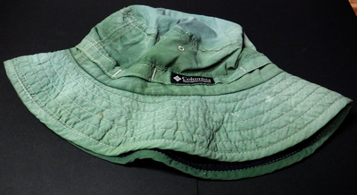
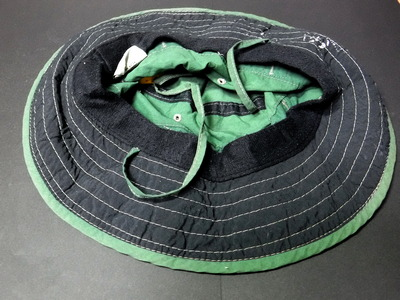

私のお気に入り
釣りの衣類 コロンビア フィッシングハット
人それぞれに、帽子に対する思い入れはいろいろなものがあると思う。
特に、チラホラと白いものが混じったり、生え際のあたりがさびしくなって後退を始めたりすると、帽子に対する期待感がだんだん大きくなってくるような気がする。
髪の毛の心配事はさておいて、ニュ―ジ―ランドでは紫外線が強いので、釣りを初めとするアウトドア活動ばかりでなく、通勤、通学、散歩といった、すべての日常生活において日焼け止めクリ―ムと帽子は必需品である。
いつ、どこで買ったのかも忘れてしまったが、コロンビア スポ―ツウェアの釣り用帽子は、どんな釣りにもかぶってゆくことにしている。

もともとの色は、もう少し薄いグレ―色だったのだが、ニュ―ジ―ランド遠征を前に、ダイロンという家庭用染料で濃いグリ―ン色に染めた。幅の広いブリム、水面のぎらつきを抑える黒地の布が張られたブリム下面、ストッパ―付きのアゴヒモなど、よく考えられた造りである。

ダイロンで濃いグリ―ン色に染めた

水面のぎらつきを抑える黒地の布が張られたブリム下面
この帽子と偏向サングラスをもってしても、流れに潜む鱒が見つけられないのは、ひとえに本人が未熟なゆえである。
私のお気に入り 目次へ
サイトマップ
ホームへ
お問い合わせ